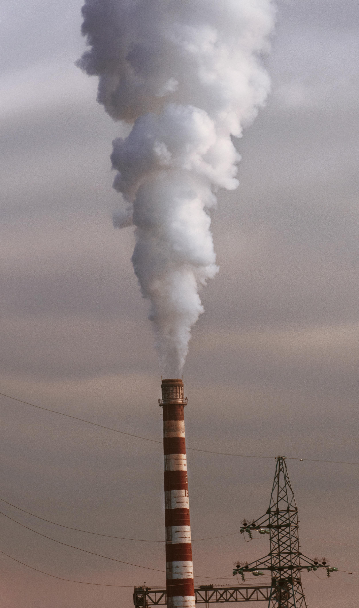
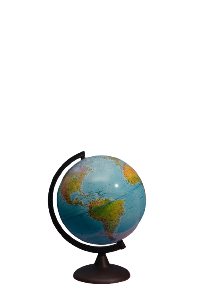

El cambio climático se refiere a los cambios a largo plazo de las temperaturas y los patrones climáticos. Estos cambios pueden ser naturales o causados por el hombre. Actualmente, es una de las problemáticas ambientales más importantes a nivel mundial, ya que afecta tanto a los ecosistemas como a la vida de las personas, provocando consecuencias en el clima, la biodiversidad y los recursos naturales.
Además, genera fenómenos como sequías, inundaciones, incendios forestales y olas de calor que afectan a millones de personas y animales en diferentes partes del mundo. Por esta razón, es importante tomar conciencia sobre el cuidado del medio ambiente y reducir las acciones que aumentan la contaminación.

Recuerda
El cambio climático no solo afecta al medio ambiente, sino también a la economía, la salud y la calidad de vida de las personas. Muchas comunidades alrededor del mundo ya enfrentan consecuencias como sequías prolongadas, inundaciones, incendios forestales y el aumento de las temperaturas. Estos fenómenos pueden provocar la pérdida de cultivos, escasez de agua y daños en los ecosistemas, afectando tanto a los animales como a las personas.
Por esta razón, es importante fomentar la educación ambiental y promover hábitos sostenibles que ayuden a reducir el impacto de nuestras actividades en el planeta. Pequeñas acciones cotidianas, como reutilizar materiales, disminuir el consumo de energía, utilizar medios de transporte sostenibles y cuidar los recursos naturales, pueden contribuir a generar un cambio positivo.
